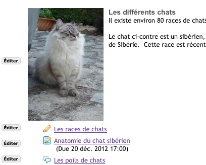
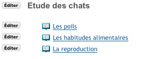
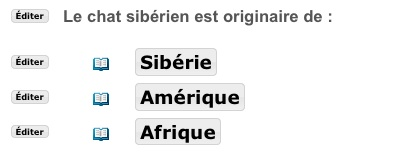

Pour commencer avec Leçon
Créez le contenu de cette page en employant l'une des commandes ci-dessus. Les plus employées sont :
- Ajouter Texte - Tapez du texte au km avec un éditeur
- Ajouter Ressource - Chargez un document ou ajoutez un lien URL vers site Web
- Ajouter Multimedia - Ajoutez un objet qui sera montré dans la page, comme une présentation Flash presentation ou une vidéo
Commencez en cliquant sur "Ajouter Texte". Vous pouvez également ajouter des liens sur des ressources, des devoirs évalués, des quizzes ou des thèmes de forums. Avec "Ajouter Multimedia" vous pouvez également inclure une présentation Flash, un film, un lien sur une vidéo...
En plaçant la souris sur une commande vous obtiendrez une brève description de son usage.
Une fois le contenu ajouté, vous verrez un bouton "Éditer" en face de chaque item, ce qui vous permettra d'ajuster la taille d'un objet multimédia, changer un titre, ajouter une légende... Employez le bouton "Éditer" pour autoriser l'accès à des activités et à des informations de façon séquentielle.
D'autres actions que vous pouvez inclure dans une page
- Ajouter site Web - Ajouter un fichier ZIP. Supporte Camtasia, Wimba Create, et Articulate, mais tout fichier ZIP contenant des ressources peut être déposé moyennant quelques précautions (voir Plus d'informations ci-dessous).
- Ajouter Sous-page - Créer une page secondaire qui pourra contenir toute sorte d'objet et qui sera liée à cette page.
- Ajouter Devoir - Permet de choisir un devoir dans l'outil "Devoirs évalués" de Sakai et de l'inclure dans la page.
- Ajouter Quiz - Permet de choisir un devoir dans l'outil "Tests & quizzes" de Sakai et de l'inclure dans la page.
- Ajouter Forum - Permet de choisir un sujet dans l'outil "Forum" de Sakai et de l'inclure dans la page.
- Ajouter Outil externe - Normalement vous devriez être alerté si vous avez besoin de cette fonction.
- Ajouter Commentaire - Permet aux étudiants d'ajouter un commentaire
- Ajouter Contenu Etudiant -Permet aux étudiants de créer leurs propres pages avec un contenu qui leur soit propre. Les autres étudiants pourront commenter.
Le bouton "Paramètres", en haut à droite, ajoute des fonctionnalités supplémentaires qui s'appliquent à toute la page. Le bouton "Éditer", à coté de chaque item, permet de contrôler les paramètres qui le concerne uniquement.
Plus d'information
- Contenu Multimédia Instructions détaillées et conseils techniques relatifs aux différents navigateurs.
- Accessibilité Web Créer un contenu accessible avec Leçon
- Séquence Comment régler les tâches successives à accomplir et organiser l'ordre dans lequel elles sont accessibles pour les étudiants.
Utilisations courantes
On peut utiliser Leçon de différentes façons. Vous trouverez ci-dessous les plus courantes :
Usage avancé
Dans la plupart des usages les deux méthodes décrites ci-dessus suffiront. Cependant on peut employer Leçon pour créer des structures beaucoup plus complexes. Nous présentons ci-dessous quelques méthodes possibles :
- Construire une séquence de pages Lorsque vous désirez que les étudiants parcourent une séquence de pages, l'approche la plus simple est de créer des sous-pages chainées à partir de la page principale, comme dans l'exemple 2. Les étudiants pourront ainsi parcourir une structure en arbre. Cependant si vous voulez suggérer à vos étudiants de suivre une séquence particulière vous pouvez ajouter un lien vers la page suivante, en bas de chaque page par exemple. De cette façon vous les orienterez dans leur parcours.
Pour ajouter une page suivante, utilisez "Ajouter sous-page", mais n'oubliez pas de sélectionner l'option "page suivante" si vous voulez faire apparaitre le lien. En cochant cette option, la page créée ne permet pas, normalement, de retourner vers la présente page. Les étudiants pourront cependant employer l'index de page pour cela, à moins qu'une page leur soit interdite.
L'option "Montrer comme un bouton" crée un bouton et non un lien hypertexte classique.
- Naviguer entre des pages différentes selon le choix de l'étudiant. Voyez l'exemple 3 à droite. Il suffira de créer une question avec "Ajouter Texte" et de proposer plusieurs réponses, en employant Ajouter Page plusieurs fois.
Le choix des options dans "Ajouter Page" est le votre. Voyez, dans l'exemple 3 comment sont employés "Montrer comme bouton" et "Page suivante".
|

Exemple 1. Echantillon d'une page avec Ajouter Texte, Ajouter Test, Ajouter Devoir et Ajouter Forum. L'image a été insérée avec l'éditeur Web dans Ajouter Texte.

Exemple 2. Exemple avec plusieurs sections au choix : un texte court avec Ajouter Texte et trois sous-pages, une pour chaque section. Cliquer sur le lien de chaque sous-page pour y ajouter du contenu.

Exemple 3.Comment donner le choix, aux étudiants, entre plusieurs réponses. Les deux réponses correspondent à des sous-pages construites avec Ajouter sous-page. A la création, l'auteur a coché deux options : "Page suivante" et "Montrer comme un bouton". Noter que Ajouter sous-page permet aussi bien d'en créer une nouvelle que de se référer à une déjà existante.
|